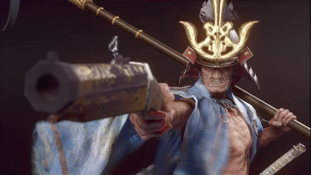
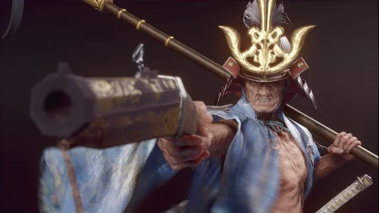

Isshin, o Santo da Espada
Guia do Chefe
Isshin, O Santo da Espada (剣聖 葦名一心) é o confronto final das rotas ligadas a Kuro. Ele ressurge após Genichiro, Caminho de Tomoe, realizar um ritual proibido nos Reservatórios de Ashina.
A luta possui três fases distintas: primeiro Isshin usa apenas a katana; depois empunha uma lança enorme combinada com uma pistola Tanegashima; e por fim adiciona cortes de relâmpago e chamas. Cada fase exige leitura de ritmo e domínio de Mikiri/Lightning Reversal.
Localização de Isshin
- Reservatório de Ashina, Ídolo “Perto da Passagem Secreta”. Após vencer Genichiro (forma Tomoe), corta-se a cena e Isshin surge.
- É obrigatório nas rotas em que você permanece fiel a Kuro. Se morrer, é necessário repetir Genichiro + Isshin.
Recompensas
- Memória: Espada Santa Isshin.
- Arte de Combate “Corte do Dragão”.
- Experiência: 20.000 / 25.000 / 37.500 (NG / NG+ / NG+2).
Estratégia fase a fase
Fase 1 – Iaijutsu
Isshin prioriza cortes horizontais e estocadas rápidas. Fique próximo para defletir os ataques de iai e responda com Ichimonji Duplo. Quando ele guarda a espada e dá dois passos para trás, prepare-se para o golpe de puxada: bloqueie e punir com 2 golpes.
Shinobi Firecracker funciona aqui para interromper investidas e resetar o ritmo.
Fase 2 – Lança e pistola
Ele saca a lança e ganha alcance absurdo. Mikiri é a resposta para as estocadas com kanji vermelho. A pistola sempre segue combos longos; guarde ou role lateralmente e volte para punir com Ichimonji ou Mortal Draw.
Loaded Umbrella bloqueia tanto tiros quanto a chuva de chamas, permitindo contra-ataques imediatos.
Fase 3 – Relâmpagos e fogo
Isshin alterna entre raios e cortes ígneos. Quando o kanji aparecer junto a relâmpago, salte, absorva e devolva (Lightning Reversal) para atordoá-lo. Para o corte flamejante (quando ele arrasta a lança no chão), corra lateralmente e retorne com Firecracker.
Ataques e Estratégia
| Ataque | Contra-ataque / Estratégia |
|---|---|
| Iai Slash (golpe rápido) | Segure a guarda na hora do brilho; o contra-golpe com Ichimonji garante grande dano de postura. |
| Estocada com lança (perigoso) | Mikiri Counter obrigatório; garante postura massiva e às vezes cambaleia Isshin. |
| Combo de lança + tiros | Deflete os dois primeiros golpes, role para evitar o disparo e ataque com 2 golpes rápidos antes do próximo ciclo. |
| Caminhada e corte flamejante | Quando ele arrastar a lâmina gerando faíscas, corra para o lado oposto; Firecracker ou Mortal Draw punem o recovery. |
| Lightning Slam | Pule para absorver o raio enquanto estiver no ar e devolva o trovão antes de tocar o chão. |
| Golpe agarrão com bainha | Se ele guardar a espada e caminhar lentamente, afaste-se – trata-se de um grab curto. Punir após a animação. |
História
"A hesitação é a derrota."
- Isshin fundou o clã Ashina e conquistou o território durante a rebelião, tornando-se lenda viva apelidada de “O Santo da Espada".
- Na batalha final, Genichiro sacrifica a própria vida para trazer Isshin de volta ao auge.
- Seu estilo mistura técnicas samurais tradicionais e truques shinobi, simbolizando o passado e presente de Ashina.
Notas e curiosidades
- Dragon Flash é uma Arte de Combate única que consome emblemas para liberar cortes de longo alcance.
- O Firecracker só funciona na primeira fase; depois disso ele ganha resistência a atordoamentos longos.
- A luta aparece nas Gauntlets of Strength, oferecendo versões mais rápidas e agressivas.
Galeria
 
